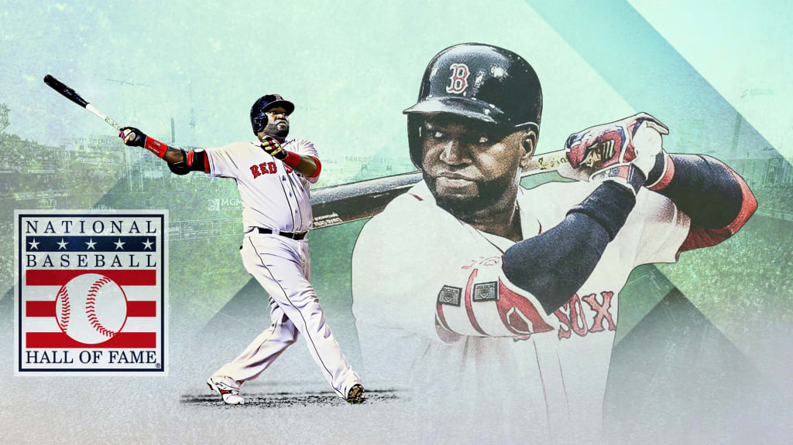

David Américo Ortiz Arias (Santo Domingo, República Dominicana; 18 de noviembre de 1975), mejor conocido como David Ortiz o El Big Papi, es un exjugador profesional de béisbol dominicano. Jugaba como bateador designado y primera base y desarrolló su carrera en los Minnesota Twins y en los Boston Red Sox de las Grandes Ligas de Béisbol (MLB).
